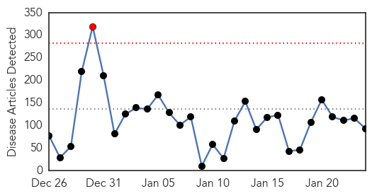
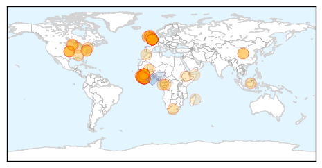
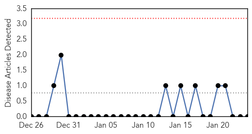

Ebola
30-Day Web Trend
1 alerts, 0 warnings

30-Day Twitter Trend
1 alerts, 0 warnings

Article Locations
Article Confidences

Top Articles:
- 1.000
- Flu, norovirus, Ebola, oh my!
- 1.000
- Tide turning in Ebola fight after hard lessons
- 1.000
- Ebola vaccine heads to Liberia for tests even as crisis eases
- 1.000
- Tide turning in Ebola fight after hard lessons
- 1.000
- Ebola outbreak easing, but little preparation for next one
- 1.000
- Tide turning in Ebola fight after hard lessons
- 1.000
- Ebola War Finally Being Won After Hard Lessons
- 1.000
- Tide turning in Ebola fight after hard lessons
- 1.000
- Three Hundred Trial Doses of Ebola Virus Vaccines are Already In Liberia Right Now For Health Care Personnel Use Initially, according to WHO.
- 1.000
- Tide turning in Ebola fight after hard lessons
- 1.000
- Tide turning in Ebola fight after hard lessons
- 1.000
- Tide turning in Ebola fight after hard lessons
- 1.000
- Tide turning in Ebola fight after hard lessons
- 1.000
- Just five Ebola cases left in Liberia
- 0.999
- Just five Ebola cases left in Liberia
- 0.999
- The world is closer to having a real weapon to fight Ebola
- 0.999
- Just five Ebola cases left in Liberia: government
- 0.999
- Just five Ebola cases left in Liberia: government
- 0.998
- On Ebola front line, first glimpse of end to epidemic
- 0.998
- Just Five Ebola Cases Left in Liberia — Naharnet
- 0.998
- U.N. says tide turning in Ebola fight
- 0.998
- Reuters Health News Summary
- 0.998
- Just five Ebola cases left in Liberia: UN
- 0.998
- Ebola Almost Eradicated in Liberia, Vaccine Expected To Hit Next Week
- 0.997
- Ebola Outbreak Latest News 2015: Experimental Ebola Vaccine Shipped to Liberia
- 0.997
- Science Journal: Just 5 Ebola cases left in Liberia
- 0.996
- Experimental Vaccine Shows Promise As It Arrives In Liberia
- 0.996
- Tide turning in Ebola fight
- 0.996
- Focus shifts as Ebola outbreak slows
- 0.995
- UN health agency to hold special weekend session on Ebola; warns against donor fatigue
- 0.995
- Anger, mistrust in Guinea villages hinders battle to beat Ebola
- 0.994
- Kenya : Ebola experts say 16 other bat viruses could infect man
- 0.994
- Scottish nurse makes full recovery from Ebola
- 0.993
- Just five Ebola cases left in Liberia, government says
- 0.992
- Ebola experts say 16 other bat viruses could infect man
- 0.992
- British Ebola nurse out of hospital
- 0.992
- CHEO doctor headed to Sierra Leone to join Ebola fight
- 0.992
- EMU alumni in Liberia, Sierra Leone tap local resilience and resourcefulness in curbing Ebola
- 0.990
- New Ebola Vaccine, Drug Trials to Start in West Africa
- 0.988
- British Ebola nurse discharged from hospital
- 0.988
- Schools reopening as W. Africa turns page on Ebola epidemic – BorneoPost Online
- 0.988
- British nurse now Ebola free
- 0.987
- Ebola experts say 16 other bat viruses could infect man
- 0.987
- Ebola experts say 16 other bat viruses could infect man
- 0.985
- U.N. Plans Summer Distribution: Scientists at Local Firm Say Ebola Pill Works
- 0.985
- Five Ebola cases left in Liberia – Government
- 0.985
- Liberia Ebola vaccine trial challenging as cases tumble
- 0.982
- China's Efforts Against Ebola Applauded
- 0.980
- Federal judge overturns Alabama's same-sex marriage ban
- 0.980
- Ebola vaccine to be tried in Liberia
Showing top 50 articles...
Top Tweets:
- 0.921
- Ebola Update: 21,759 confirmed, probable and suspected cases reported in 3 most affected countries, with 8,668 deaths. EbolaResponse
- 0.796
- RT: Microbes and Infection: Development of therapeutics for treatment of Ebola virus infection http://t.co/D73OFd58CT http:/…
- 0.580
- How Ebola Could Eradicate Female Genital Mutilation In West Africa FGM via http://t.co/o2iNYbxA2y
- 0.575
- Scientists work on inhanced computational models to stop/slow the spread of the virus. FightingEbola http://t.co/eTXxEhiwWs
Mold/Fungal
30-Day Web Trend
0 alerts, 0 warnings

30-Day Twitter Trend
0 alerts, 0 warnings

Article Locations

Article Confidences

Top Articles:
-
No articles found for Jan 24, 2015
Top Tweets:
-
No tweets found for Jan 24, 2015